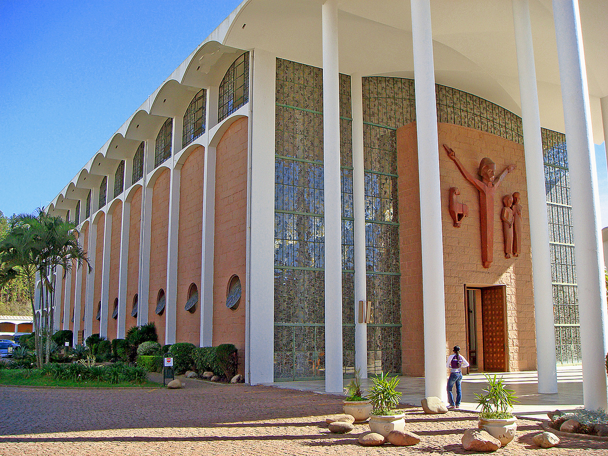
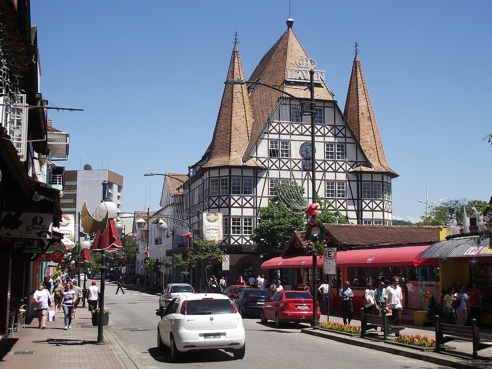

Blumenau é um município do estado de Santa Catarina, Região Sul do Brasil. Localiza-se na microrregião homônima e na Mesorregião do Vale do Itajaí. É a cidade-sede da Região Metropolitana do Vale do Itajaí. É o terceiro município mais populoso do estado, o 8º da Região Sul do Brasil, o 78º do Brasil e a única cidade média-grande de Santa Catarina, constituindo um de seus principais polos industriais, tecnológicos e universitários.
Pontos Turísticos
Teatro Calos Gomes
A Associação Dramático Musical Carlos Gomes é uma entidade cultural, sem fins lucrativos, que atua em Blumenau desde o ano de 1860, quando foi fundada. Seu objetivo é o de incentivar por todos os meios a prática e o desenvolvimento da cultura e das artes, em todas as suas formas de expressão, podendo estender suas atividades a todo território nacional. Além de ser declarada de utilidade pública municipal, estadual e federal.
Igreja Matriz
No dia 20 de setembro de 1868, Pe. Antônio Zielinski benzeu a pedra fundamental da primeira Igreja de São Paulo Apóstolo de Blumenau, projetada por Henrique Krohberger. No dia 24 de dezembro de 1876, foi inaugurado e abençoado o templo religioso pelo Pe. José Maria Jacobs e, com a celebração da primeira missa em seu interior, começou o culto regular para os fiéis. Com recursos reduzidos, a construção foi feita por longas etapas, tendo durado nada menos do que nove anos.
Castelinho da XV
O Castelinho da Moellmann ou Castelinho da XV foi construído em 1978 para sediar a Loja Moellmann, nomeada como Castelinho. O Castelo foi idealizado pelo empresário Udo Schadrack e projetado pelo arquiteto Heinrich Herwig, e é uma réplica da Prefeitura de Michelstadt, cidade localizada ao Sul da Alemanha. Com todas as características de um prédio do século XV, o monumento é referência do turismo local. Localizado na região central da cidade, é um atrativo turístico muito visitado, segundo mais fotografado do Sul do Brasil.
